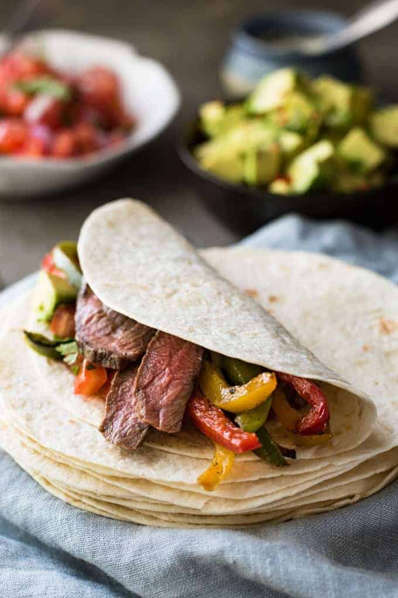

Fajitas

Beef fajitas are a classic Tex-Mex dish that typically consist of strips of marinated beef, grilled with bell peppers and onions, and served with warm tortillas. The meat is often seasoned with a blend of spices, such as cumin and chili powder, to give it a bold, flavorful taste. The dish is also traditionally served with toppings such as shredded cheese, salsa, sour cream and cilantro.
Fajitas can be served as a main dish, usually accompanied by beans and rice, or as a appetizer. The dish is versatile in that it can be made with different types of meats, seafood, or vegetables. Beef fajitas are a popular choice because of the tenderness and flavor of the meat. It's a perfect dish for entertaining, as it can be prepared ahead of time and cooked quickly just before serving. It's a favorite for family dinner, parties and casual gatherings.
Ingredients
- 1 lb flank steak
- 1 red bell pepper, sliced
- 1 green bell pepper, sliced
- 1 onion, sliced
- 2 cloves of garlic, minced
- 1 tsp cumin
- 1 tsp chili powder
- Salt and pepper, to taste
- 8-10 flour tortillas
- Optional toppings: sour cream, salsa, shredded cheese, cilantro
Instructions
- Cut the flank steak against the grain into thin strips.
- In a small bowl, mix together cumin, chili powder, salt, and pepper.
- Rub the spice mixture onto the steak strips.
- Heat a large skillet over high heat. Add a little oil and then add the steak strips. Cook for 2-3 minutes per side, or until desired doneness is reached.
- Remove the steak from the skillet and set aside.
- In the same skillet, add a little more oil if needed. Add the bell peppers, onion, and garlic. Cook for 2-3 minutes, or until the vegetables are slightly softened.
- Return the steak to the skillet and toss to combine with the vegetables.
- Warm the flour tortillas in the oven or on a skillet.
- To serve, place a few strips of steak and vegetables on a warm tortilla. Add toppings as desired.
- Fold the tortilla in half and enjoy!